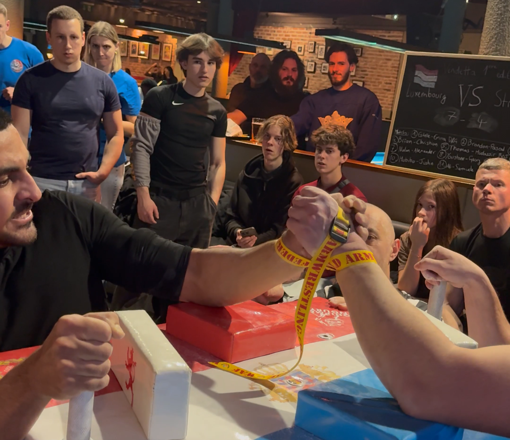

Le club de bras de fer le plus proche de Luxembourg-ville. Entraînement mardi 18h à Strassen — 8 minutes en voiture, 12 minutes en transport.

L'Armwrestling Club Strassen est implanté au 86 rue des Romains à Strassen, à seulement 8 minutes en voiture de Luxembourg-ville et 12 minutes en transport en commun. C'est le club de bras de fer le plus accessible depuis le centre de la capitale luxembourgeoise.
Membre de la Luxembourg Armwrestling Federation (LAF), le club propose des entraînements le mardi soir à partir de 18h, ouverts à tous les niveaux — y compris aux personnes qui n'ont jamais pratiqué le bras de fer.
Le club est facilement accessible depuis de nombreux quartiers de Luxembourg-ville et communes alentour :
Le bras de fer est l'un des sports de force les plus accessibles et les moins coûteux disponibles au Luxembourg. Une seule licence annuelle à 150€ donne accès à deux clubs (Strassen et Munsbach), au matériel professionnel, et aux compétitions officielles.
C'est aussi le seul sport de combat individuel au Luxembourg où vous pouvez passer de débutant complet à compétiteur international en moins d'un an, avec des événements organisés chaque année à Munsbach sous l'égide de la Luxembourg Armwrestling Federation.
Le bras de fer est catégorisé par poids corporel — vous ne serez jamais opposé à quelqu'un de beaucoup plus lourd que vous. C'est un sport mixte, hommes et femmes pratiquent ensemble dans une ambiance inclusive.
Première séance : Venez directement le mardi à 18h au 86 rue des Romains. Présentez-vous comme débutant. On vous explique les bases de sécurité et vous essayez sur table immédiatement. Aucun équipement à apporter.
Une fois licencié, vous avez également accès au Grizzly of Luxembourg à Munsbach, le vendredi à 18h. À 17 minutes en train ou 13 minutes en voiture depuis Luxembourg-ville, c'est le complément idéal pour plus de sparring.
86 rue des Romains, Strassen — 8 min depuis Luxembourg-ville.
Le club le plus proche de Luxembourg-ville — séances hebdomadaires, accès facile, débutants bienvenus.
Lire l'article →Aucun niveau requis pour rejoindre l'ACS — le guide pour commencer le bras de fer au Grand-Duché.
Lire l'article →Tout ce qu'il faut savoir avant ta première séance : technique, sécurité et ce à quoi s'attendre.
Lire l'article →